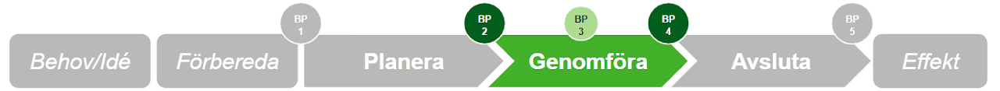
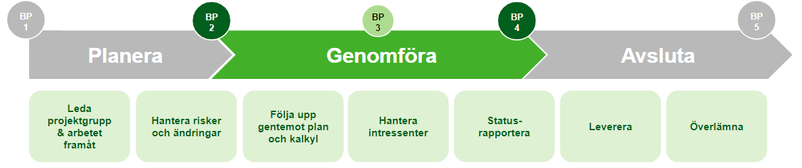

Genomföra projektet
Projektets planering är godkänd och genomförandefasen har börjat. Nu ska överenskomna mål nås och resultatet tas fram och överlämnas till utsedd mottagare.

Vad händer nu?
Förutsättningarna finns och projektet är värt att fortsätta — BP 2-beslutet är taget och genomförandefasen har börjat. Kanske har ni planerat in en eller flera BP 3, eller ingen alls.
Under genomförandet ska projektet utföras med projektplanen som utgångspunkt. Projektledaren leder arbetet, lämnar statusrapporter till styrgruppen fortlöpande — skriftligt eller muntligt enligt överenskommelse — och söker stöd och beslut i styrgruppen vid behov.
Projektledaren har ansvar och mandat att genomföra det som överenskommits i projektplanen.

När projektplanen väl är antagen behöver projektdirektivet inte längre uppdateras. Det är projektplanen som gäller och ändringar dokumenteras i beslutsloggen. Aktiviteter kan detaljplaneras alltefter projektet framskrider.
Projektledaren lämnar sedan över resultatet till mottagaren och beställaren verifierar projektets leverans.
Underlätta ditt arbete
Fortsätt dokumentera de lärdomar ni gör under projektets gång och se hur ni kan ta vara på dem.
Det är fördelaktigt att redan nu förbereda diarieföringen! Läs mer om vad som gäller under Diarieföring.
När genomförandet är klart (eventuella BP 3 har passerats) och projektets leverans överensstämmer med målen, fattas BP 4-beslutet. Vem fattar beslut? Beställaren med stöd av styrgrupp.
Vad ska finnas på plats för BP 4?
- Eventuell restlista på ej uppnådda mål och återstående problem har dokumenterats och ansvaret för dessa har överlämnats
- Leveransen/slutresultatet och ansvaret är överlämnat till mottagaren/mottagarna (och de har förutsättningar att ta emot)
- Beställaren har godkänt projektets leverans
Obligatoriska dokument
- Statusrapport (löpande)
- Beslutslogg
- Leveransgodkännande
Verktyg i genomförandefasen
För att underlätta arbetet finns ett antal verktyg framtagna som stöd.
Projektets leverans överensstämmer med målen — underlag och motivering till beslut. Börja använda redan nu som stöd.
Öppna mall →Sammanfattar de kommunikationsinsatser som behövs för att underlätta genomförandet.
Öppna mall →Stöd för riskanalys — identifiera och prioritera risker med miniriskmetoden.
Öppna mall →Stöd vid överlämning av projekt till förvaltning. Sammanställ den information som behövs.
Öppna mall →Överlämning från projekt till objekt — nyttja vid digitaliseringsprojekt.
Öppna mall →Rapportera projektets status till styrgruppen — skriftligt eller som presentation.
Öppna mall →Checklistor
Beställaren
- Jag stöttar aktivt projektledaren i genomförandet av projektet
- Jag genomför de beslutspunkter som bestämts och tar beslut i övriga frågor som projektledaren för upp
- Jag tar mitt ansvar att säkra resurser i projektet när nya behov uppstår
- Jag har regelbunden avstämning med projektledaren om projektets utveckling
- Jag genomför de styrgruppsmöten som behövs
Projektledaren
- Jag följer upp och ser till att projektet löper enligt plan
- Jag ger tidiga signaler till projektbeställaren om risker och förändringar i projektet
- Jag följer de beslutspunkter som angetts och levererar statusrapporter enligt plan
- Jag motiverar och leder projektgruppen på ett bra sätt
- Jag använder mig av referenspersoner eller den referensgrupp som är knuten till mig på bästa sätt
Projektgruppsdeltagaren
- Jag utför de arbetsuppgifter som jag ansvarar för i tid och med överenskommen kvalitet
- Jag bidrar aktivt för att projektet ska kunna nå sina mål
- Jag ger tidiga signaler till projektledaren om problem uppkommer
Producera — LF:s motsvarande fas
Hos Lejonfastigheter motsvaras genomförandefasen av processen Producera. Denna fas startar efter att systemhandlingar är färdigprojekterade och upphandling av entreprenör är genomförd.
- Byggproduktion genomförs enligt framtagna handlingar och kontrakt
- Byggmöten hålls regelbundet med entreprenör, projektledare och beställare
- Ekonomisk uppföljning sker löpande mot investeringsbeslut och budget
- Ändrings- och tilläggsarbeten (ÄTA) hanteras och dokumenteras noggrant
- Slutbesiktning genomförs innan lokalen kan lämnas över till hyresgästen
Roller i Producera-fasen
- Projektledare (LF) — leder produktionen och ansvarar för tid, kostnad och kvalitet
- Fastighetsutvecklare — bevakar att projektet följer investeringsbeslutet
- Lokalsamordnare (kommunen) — säkerställer att hyresgästens behov tillgodoses under byggtiden
Nästa steg hos Lejonfastigheter är processen Lämna över lokal / Avsluta projekt, som motsvarar kommunens Avsluta-fas.
Jag vill veta mer!
Om delleveranser och BP 3
Om projektet har planerats med delleveranser kan varje delleverans avslutas med en BP 3 (BP 3:1, BP 3:2 osv.). Hur genomförandefasen planeras behöver förankras hos styrgruppen.
Ändringshantering under genomförandet
Projektledaren har mandat att hantera mindre förändringar. Större förändringar som påverkar tid, kostnad eller resurser ska lyftas till beställaren/styrgruppen och dokumenteras i beslutsloggen.
Förbered diarieföring redan nu!
Märk de dokument som ska diarieföras med etiketten "Ska diarieföras" redan under genomförandet. Det förenklar arbetet vid projektavslut. Läs mer under Diarieföring.